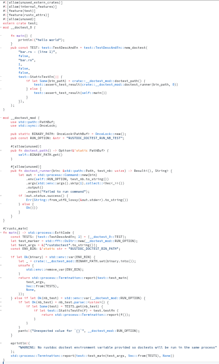

How doctests work
by Guillaume Gomez
Who am I?
Rust language reviewer and contributor.
Member of:
- rustdoc team (team leader)
- docs.rs team
- dev-tools team
- clippy-contributors team
I am an engineer at Huawei.
## Doc... tests?
``````rust
//! I'm a doc comment
/// I'm also a doc comment
///
/// ```
/// println!("I'm a doctest");
/// ```
pub fn foo() {}
``````
## Features of doctests
* compile_fail
* edition
* ignore
* no_run
* should_panic
* ...
## Example
``````rust
//! ```should_panic,edition2021
//! panic!("If I don't panic, something weird is going on");
//! ```
``````
## More features!
* Hiding lines with `#`
* You can use `?` without wrapping
* Custom CSS
* `cfg(doctest)`
## Example (again)
``````rust
//! ```custom,{.my-css-class}
//! let x = Ok("question mark")?;
//! # Result::<(), ()>::Ok(())
//! ```
``````
## More options
* `--show-output` (`cargo test --doc -- --show-output`)
* `#![doc(test(attr(...)))]`
## ... So how do they work?
To generate doctests, we need to check a few things:
* Is the code syntax valid?
* Is there a `main` function?
* Is it using inner attributes? (`#![]`)
* Is it returning a `Result`?
* Is it importing external crates?
* Is it defining a macro?
## Doctest generation example
``````rust
//! ```
//! println!("hello world");
//! ```
``````
Becomes:
```rust
#![allow(unused)]
fn main() {
#[allow(non_snake_case)]
fn _doctest_main_bar_rs_1_0() {
println!("hello world");
}
_doctest_main_bar_rs_1_0()
}
```
## Limitations
* Slow (not anymore since the 2024 edition!)
* Cannot test non-public API
* No support from tools (clippy, rustfmt...)
## Merged doctests?
Numbers:
| crate | before this feature | with this feature | speedup |
|-|-|-|-|
| std | 12s | 3.56s | x3 |
| core | 54.08s | 13.5s | x4 |
| sysinfo | 4.6s | 1.11s | x4.1 |
| geos | 3.95s | 0.45s | x8.7 |
| jiff | 4min39 | 7.2s | x38.8 |
Merged doctest generation example

## Merged doctest runner
1. Compile the merged doctests
2. Run the binary
3. The binary calls `libtest` with all tests to be run
4. `libtest` runs each test in its own thread...
5. ... Each doctest runs itself into a new process
## Why running each doctest into a new process?
* Prevents issues with non-thread-local globals
* `exit` will only exit the current doctest
## Merged doctest code
```rust
mod __doctest_0 {
fn main() {
println!("hello world");
}
pub const TEST = test::TestDescAndFn::new_doctest(
"bar.rs - (line 1)",
test::StaticTestFn(|| {
if let Some(bin_path) = crate::doctest_path() {
test::assert_test_result(
crate::doctest_runner(bin_path, 0),
)
} else {
test::assert_test_result(self::main())
}
}),
);
}
```
## Merged doctests limitations
* Some code attributes aren't support (`test_harness`, `compile_fail`)
* Some options are not supported (`--show-output`)
* `std::panic::Location::caller()` is mostly useless
* If any of the merged doctests failed to compile... then none is run as merged doctests
## New code attribute
`standalone_crate`
``````rust
//! ```standalone_crate
//! let location = std::panic::Location::caller();
//! assert_eq!(location.line(), 4);
//! ```
``````
## What's next?
* Smaller generated merged doctests?
* Binary crates/private items doctests? (#50784)
## About binary crates/private items doctests
Multiple approaches:
1. Generate expanded crate code with doctests
2. Add a new `--doctest` flag to rustc
3. libtest-next
Thank you for listening!
More Rust things on
< blog.guillaume-gomez.fr >
< guillaume1.gomez@gmail.com >
 @GuillaumeGomez
@GuillaumeGomez
 @imperio@toot.cat
@imperio@toot.cat
 @imperioworld.bsky.social
@imperioworld.bsky.social
 @imperioworld_
@imperioworld_